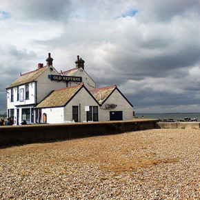
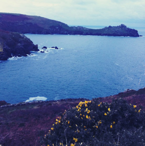
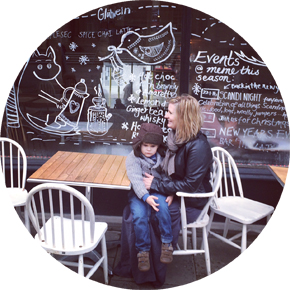
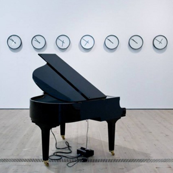

Eat & Drink
Winter is a great time to visit The Old Neptune on Whitstable Beach in Kent. Order some whitebait and a bottle of Whitstable Bay Ale and watch the dark grey clouds roll in off the sea. Raindrops drip, drip through the old tiled roof and collect in pint glasses dotted around the floor…
read moreGo & Stay
Imagine lying in bed on a Monday morning, sipping tea and reading the papers; a breakfast of porridge and local kippers in front of a blazing fire; when everyone else has gone back to work. It’s the Sunday Sleepover at the brilliant Gurnard’s Head in Cornwall
read moreMeet the Team
Emma is a Gloucestershire-based mum of three boys. When not working for a local wildlife charity she crams in as many family adventures as possible, and has been blogging about them at Bradshaw & Sons since 2007. Here she discovers a great new, kid-friendly cafe bar in lovely Stroud…
read moreSee & Do
Trendy without being formidable and learned without being lofty, the Baltic Centre for Contemporary Art in Gateshead gets top marks for family-friendly gallery-going. Anita’s tribe also love the great glass elevators which take you five floors skyward to stunning views over the Tyne…
read moreEat & Drink
Elinor gives a big thumbs up to Plateau, a great little restaurant in the heart of Brighton that pulls in food-loving locals. Think French bistro dining at its most cosy, lively and comforting, all twinkly lights, happy background chatter and the most delicious food, cocktails and natural wine…
read more